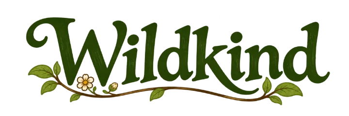

Ecosystem Builder Build a home where nature can thrive.
HELP! I'm stuck in a bucket!
Hi, I'm Kiko the koi fish.
This bucket is way too small for me.
Can you build me a real pond?

Ecosystem Builder Build a home where nature can thrive.